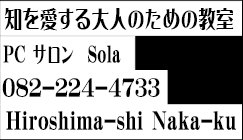
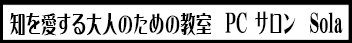

BOOK
武士の家計簿
磯田道史 / 新潮新書
幕末の加賀藩士の家計簿から、武士の実像を読み解く一冊。
確認用テストA テキストが見えていれば最新版です


BOOK
磯田道史 / 新潮新書
幕末の加賀藩士の家計簿から、武士の実像を読み解く一冊。

BOOK
呉座勇一 / 中公新書
なぜ戦乱は10年も続いたのか。日本史の転換点を追う。

ESSAY
2026.06.16
才を隠し、世俗に交わる。老子の言葉から考える。